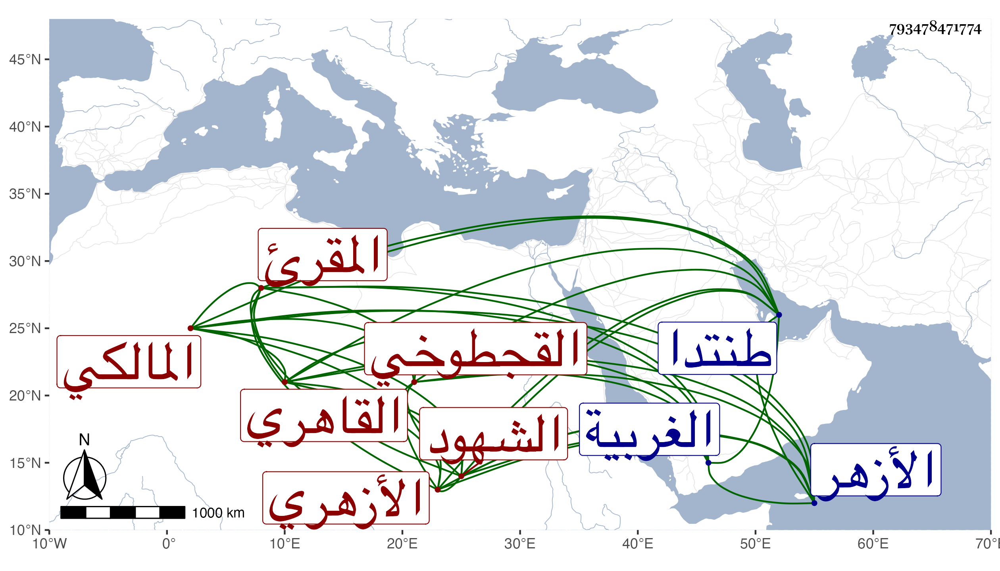

0902Sakhawi.DawLamic.ITO20230111-ara1.EIS1600.793478471774
Biography ID: 793478471774
647
علي بن أحمد نور الدين القجطوخي ثم القاهري الأزهري المالكي المقرئ أحد الشهود الجالسين تجاه حانوت المجهزين بالقرب من الجوانية ويعرف بين أهل بلده بابن فليفل . ولد تقريبا سنة تسع وثلاثين وثمانمائة بقوج طوخ من الغربية غربي طنتدا ونشأ بها فحفظ القرآن ثم تحول إلى الأزهر فجاور به وقرأ الرسالة والشاطبيتين وغيرها واشتغل في الفقه وغيره قليلا وتنزل في سعيد السعداء وغيرها ، واعتنى بالقراءات فأخذها عن عبد الغني الهيثمي والزين جعفر وناصر الدين الأخميمي حتى أتقن السبع بل وأخذ عن السنهوري وأجيز ، وحج وجاور وسافر عيداب وغيرها وكان لا بأس به ممن يتكسب بالشهادة حتى مات في ربيع الأول سنة اثنتين وتسعين رحمه الله .
